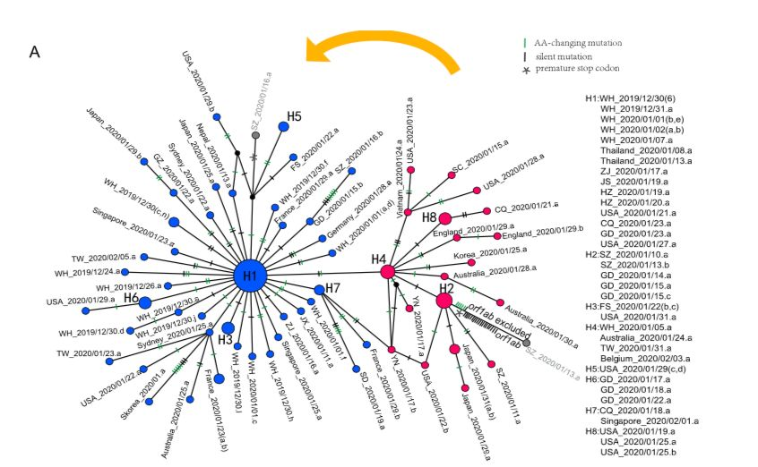

中国科研团队发现“新冠病毒已突变”
原文链接 备份链接 澎湃新闻记者 张若婷 贺梨萍 新冠病毒是否已经发生突变？如何突变？这是目前学界研究的焦点之一。 中国科研团队最新发现显示：新冠病毒已于近期产生了149个突变点，并演化出了两个亚型，分别是L亚型和S亚型。 研究发现，在地 …

3 月 3 日，《国家科学评论》（_NSR_）发表题为《关于 SARS-CoV-2 的起源和持续进化》研究称，新冠病毒已经演化出 L 和 S 两个亚型，并且这两种亚型的传播能力、致病严重程度或许存在明显区别。
研究发布后，媒体纷纷以 “新冠病毒已突变为 2 个亚型” 等字眼报道，似乎新冠病毒已经突变产生了新的威胁。
事实上，病毒突变符合正常流行病学规律，目前研究也没有发现病毒产生重组，那么就不应该引起人们无端恐慌。《国家科学评论》发表的这项研究是一个针对基因分型的研究，并没有确证新冠病毒产生了功能的分型，对其传染力和毒性的比较也只是猜测。
DeepTech 经多方了解发现，对于一个 3 万碱基对大小的 RNA 病毒来说，数月来的大规模传播过程中累积产生 149 个突变并非意外。相反，业内认为新冠病毒还是比较稳定的。
新冠病毒并没有质的突变

突变对于病毒来说是“家常便饭”，尤其是对于新冠病毒这类 RNA 病毒更是如此。新冠病毒在宿主中快速复制、传播过程中，随机突变（即拷贝 RNA 时的错误）会在基因组中累积。这种随机突变可以帮助追踪病原体的传播，并了解其传播途径和动态。
《国家科学评论》论文的通讯作者系北京大学生命科学学院生物信息中心陆剑研究员与中国科学院上海巴斯德研究所崔杰研究员。他们分析了公共数据库里的 103 个新冠病毒基因组数据，发现这些病毒株一共存在 149 个突变位点，且多数突变在近期发生。
研究人员依据病毒 RNA 基因组的第 28144 位点将这些基因组数据分为 2 个组，L 亚型是 T 碱基（对应亮氨酸，Leu），S 亚型是 C 碱基（对应丝氨酸，Ser）。并得出 S 亚型新冠病毒与蝙蝠来源的冠状病毒在进化树上更接近，即 S 亚型相对更古老的结论。
作者表示，相对于 S 亚型，L 亚型更具毒性，传染力更强。论文称，这个推断将有助于新冠肺炎的差异化的治疗和防控。
复旦大学生命科学学院姜宁博士告诉 DeepTech，这个研究只是针对基因组上的突变分型，要说 2 个亚型在功能上有区别的话，至少现在是证据不足的，还需要进一步的功能验证。因为这种区别是很多原因造成的，单纯从目前的证据得不出 2 个亚型传染力强弱区分的结论。
对于新冠病毒这类 RNA 病毒来说，最需要关注的特性就是传染力和毒性，目前还没有看到两者发生了质的突变。姜宁表示，2 个亚型的比较只是一个猜测，需要实验来验证，要知道生物信息学的分析都需要实验来验证。但是这个推测是有意义的，应该引起注意或者引起重视。
论文显示，从武汉分离出的 27 种病毒中，有 26 种（96.3％）为 L 亚型，只有 1 种（3.7％）为 S 亚型。 但是，在武汉以外地区分离出的其他 73 种病毒中，L 亚型为 45 种（61.6％），S 亚型为 28 种（38.4％）。
L 亚型在武汉暴发的早期阶段更为普遍，作为祖先型的 S 亚型几乎完全被 L 亚型取代，而 L 亚型的发生频率在 2020 年 1 月初后有所下降，随着时间推移，S 亚型又逐渐上升。
作者认为，人为干预可能对 L 亚型施加了更大的选择性压力，使其传染能力更强，复制速度更快。另一方面，随着医疗和隔离措施的加强，L 亚型的负选择压力变大，S 亚型选择压力变弱，所以 S 亚型频率逐渐上升。
对于病毒不同亚型与其致病性的关系，作者表示本可通过把基因组数据和病例结合起来分析，从而加强证据等级。但由于无法得到患者资料，也就无法得到更多基因组数据。
与西双版纳植物园研究异曲同工

图 | 新冠病毒的单倍型网络。 蓝色代表 L 亚型，红色代表 S 亚型。橙色箭头表示 L 亚型是从 S 亚型演变而来的。（来源：国家科学评论）

图 | 中国科学院西双版纳热带植物园郁文彬等人的论文将 93 份样本基因组数据分为 ABCDE 等 5 个组。其中 A、B 组对应《国家科学评论》论文中的 S 亚型，C、D、E 对应《国家科学评论》论文中的 L 亚型。（来源：ChinaXiv ）。
据 DeepTech 了解，中国科学院西双版纳热带植物园郁文彬等人的论文（下称 ChinaXiv 论文）正在同行评议中。
ChinaXiv 论文和《国家科学评论》论文有相似之处。其一，都是依据目前公开的新冠病毒基因组数据库。只是前者用了 93 份样本，后者用了 103 份样本。其二，都对基因组样本进行了基因分型。前者关注的是新冠病毒的传播特性，分为 ABCDE 等 5 个组；后者依据突变位点将样本分为 2 个组。
有学者指出，两个研究在确定古老基因型的方法和数据上差别不大，差异在于研究的目标。ChinaXiv 论文的硬伤在于将新冠病毒溯源作为目标之一，而目前武汉新冠病毒样本的缺陷很容易导致结论偏倚。因为最大疫情暴发地的武汉病毒样本数据太少，而确诊病例少得多的其他国家和省份却数据更多。而《国家科学评论》论文并没有将新冠病毒溯源作为研究目标，这就让它避免了有关样本缺陷导致的批评。
在《国家科学评论》论文中提到，2020 年 1 月 7 日之前分离出的 26 个样本全部来自武汉，而 2020 年 1 月 7 日以来收集的 74 个样本中，只有一个来自武汉，33 个来自中国其他地方，40 个来自中国以外的患者。值得注意的是，这里的样本只有100个，是因为有2个样本不符合两个亚型分类而未计入，另有一个患者的样本同时具备L和S两个亚型。这与 ChinaXiv 论文的样本分析接近。《国家科学评论》论文作者也表示，103 个病毒株基因组数据量较少，后续工作需要扩大样本量，以验证这些结论或推测。
有学者指出，ChinaXiv 论文和《国家科学评论》论文用的分析方法是传统的植物系统进化和分类研究方法，或者是基因组比较大的样本研究，而这些研究的基因组大小和新冠病毒不是一个等级的。这样的话，“这个进化分析结果的稳健性是值得进一步分析确认的”。
-End-

原文链接 备份链接 澎湃新闻记者 张若婷 贺梨萍 新冠病毒是否已经发生突变？如何突变？这是目前学界研究的焦点之一。 中国科研团队最新发现显示：新冠病毒已于近期产生了149个突变点，并演化出了两个亚型，分别是L亚型和S亚型。 研究发现，在地 …
原文链接 备份链接 图片来源：WHO 记者：潘金花 “ 专家指出，疫苗在研发时一般都以病毒“最持久”的部分为依据。因此，一款疫苗仍很有可能对多种亚型的病毒起效。 ” 在全球科学界争分夺秒与新冠病毒“赛跑”的过程中，新的挑战正在不断出现。 …
原文链接 备份链接 图片来源：海洛创意 记者：金淼 “ 作者发现新冠病毒已经演化出L和S两个亚型，这两个亚型在地域分布以及人群中的比例相距甚远。 ” 3月3日，《国家科学评论》发表《关于SARS-CoV-2的起源和持续进化》一文。论文通讯 …
原文链接 备份链接 图片来源：新华社 作者：DeepTech 孙滔 本文授权转载自DeepTech（ID：deeptechchina） “ 华南海鲜市场的新冠病毒来自其他地方，这个结论有了基于基因序列的证据。 ” 华南海鲜市场的新冠病毒来 …
原文链接 备份链接 【财新网】（记者 杜偲偲）研究者试图根据新冠病毒基因演化情况了解病毒扩散路径。2月21日，中国科学院西双版纳热带植物园、华南农大、中国脑科学研究所等机构的研究人员发表预印文章称，武汉华南海鲜市场的新冠病毒是从其它地方传 …